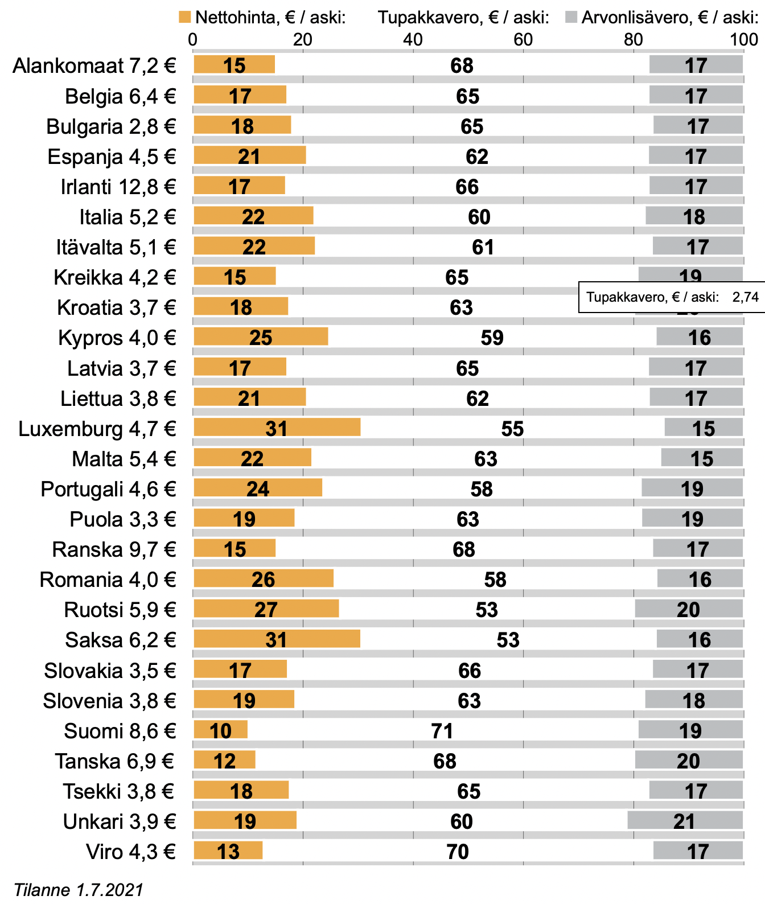

Ulkomaanmatkalle lähtiessään voi huomata tuttujen tuotteiden - kuten kokiksen - maistuvan ulkomailla hieman erilaiselta. Tämä makuaistimus ei kuitenkaan ole pelkkää matkan hurmetta tai mielikuvituksen tuotetta, vaan suurienkin yritysten tuotteissa on alueellista vaihtelua reseptin suhteen. Savukkeet eivät ole mikään poikkeus alueellisesta vaihtelusta puhuttaessa, ja amerikkalainen savuke onkin tunnetusti tuhti, mutta jopa Euroopan maiden välillä on laadullista vaihtelua saman brändin alla myytävissä savukkeissa. Mistä vaihtelu johtuu, ja miksi erot ovat suuria niinkin pienillä välimatkoilla?
Vaikka EU:lla on yhteiset linjat tupakkapolitiikassan, on tupakan verotus kovasti maakohtaisesti vaihtelevaa. Suomessa tupakan verotus on kasvava tulojen lähde valtioille, vaikka tupakoinnin yleinen suosio ole länsimaissa kasvamaan päin. Viimeisen 10 vuoden aikana on tupakkaveron tuotto kasvanut liki 50% ja viime vuonna valtion kassaan kilahti runsaat 1,1 miljardia. Tupakkaa siis verotetaan yhä kovemmin, mutta mikä sen vaikutus on käytännössä itse tupakkaan?
"Nautitaanko Suomessa Euroopan lokaisimpia savukkeita?"
Vaikka alla olevissa kuvaajissa ei ole suhteutettu askin hintaa elintasoon – eli ei voida päätellä kuinka suuren loven se todella tekee kansalaisen kukkaroon – voidaan niistä päätellä Euroopan rapaisimmat savukkeet.
Euroopan halvin savuke on euromääräisesti Bulgariassa, mutta sekään ei vielä tarkoita bulgarialaisen tupakan olevan erityisen huonoa, saati yksioikoisen halpaa bulgarialaisille. Bulgarialaisen tupakan hintaan vaikuttaa elintason lisäksi se seikka, että Bulgaria on tupakan tuottajamaa. Kun tuotanto on jokseenkin paikallista ja ketjussa on vähemmän välikäsiä, voitaneen päästä halpaan hintaan ilman sikuria savukkeessa.
Suomessa puolestaan nautitaan Euroopan kitkerimpiä savukkeita - ainakin mitä veroihin tulee - sillä tupakkavero on päätähuimaavat 72%, johon lisätään alv, varsin kohtuulliset 19%. Veroprosentin ja laatu- kysymyksen konkretisoimiseksi voidaan esittää ajatusleikki: jos ruotsalainen aski – nettohinnaltaan 1.63€ - myytäisiin Suomen veroprosentilla yht. 100%, olisi sen hinta 16,30€. Minkälaista lokaa mahtaakaan suomalainen savuke pitää sisällään, kun nettohinta ajetaan 81 senttiin! Suomalaisella elintasolla moisella rahasummalla ei paljoa saa.
Keskimääräisesti suurin veroton hinta askille taas on Irlannissa, (2,06€) mikä saa ajattelemaan savukkeen jollakin tapaa paremmaksi kuin Suomessa. Naama ei kuitenkaan voi vääntyä kovin leveään hymyyn, kun on maksanut askista yli 12€, mikä on tämän päivän arkea Irlannissa.
Viereisessä veronmaksajain keskusliiton julkaisemassa kuvaajassa näkyy EU maittain savukkeiden hinnan rakenne euromääräisinä osuuksina, eli kuinka paljon askista on tupakan hinta, tupakkaveron hinta ja ALV hinta. Tässä kohtaa toistan sanaa hinta, sillä se on hieman vaikeasti sulava asia.
Tupakkavero - Tupakka-askin verojen ja nettohinnan rakenne euroissa.
Lähde: veronmaksajat.fi
Tupakkavero - Tupakka-askin verojen ja nettohinnan rakenne prosenteissa.

Lähde: veronmaksajat.fi
Hypoteesina siis pitkä filtteri tässä kuvaannollisessa tupakassa heijastelee “hyvää” tupakkaa, valkea paperi politiikkaa ja harmaa tuhka maakohtaista alvia. Verohan on tupakassa ollut aikojen alusta asti ja se on ajatuksena yhteiseen hyvään, mutta miltä näyttää kenenkin “ideaali” savuke tässä kohden? Miltä maistuu mikäkin näistä?
Suomalaisesta askista on 81 senttiä itse tupakan hinta paketointeineen, 6,37€ tupakkaveroa ja 1,72€ alvia. Alemmassa kuvaajassa on eritelty em. tupakan “osasten” suhdetta hintaan prosentein. Nostona voimme todeta Suomessa olevan EU maista toiseksi suurin tupakkaveron osuus, 72 %, korkein taas Tanskassa, 73%. Luxemburgissa on puolestaan korkein nettohinnan osuus 31 %, ja toisinaan verrokkimainamme pidetyt Ruotsi ja Saksa seuraavat 27% ja 30% nettohinnan osuuksin. Vertailkaamme siis käytännössä länsinaapurimme ja vanhan aseveljemme askeja, jota ei ole pilattu liioin hinnalla tai veroilla. Jatkakaamme siis juttuun kolme kamelia.
Lue artikkeli kolme kamelia!
Tilaa